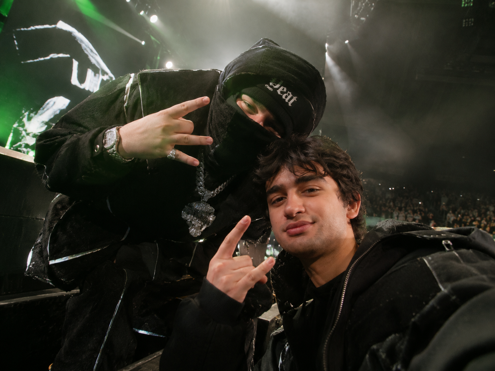
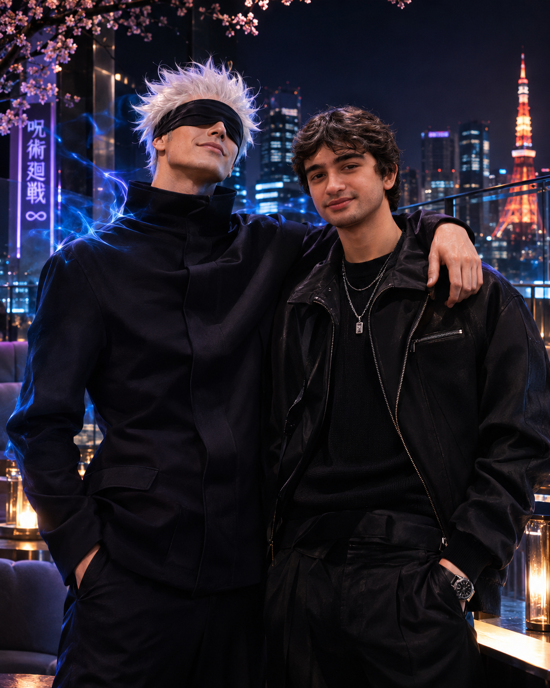
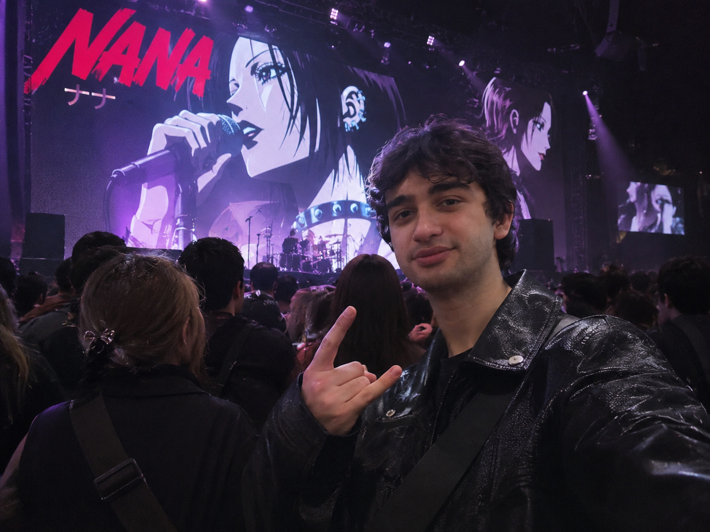
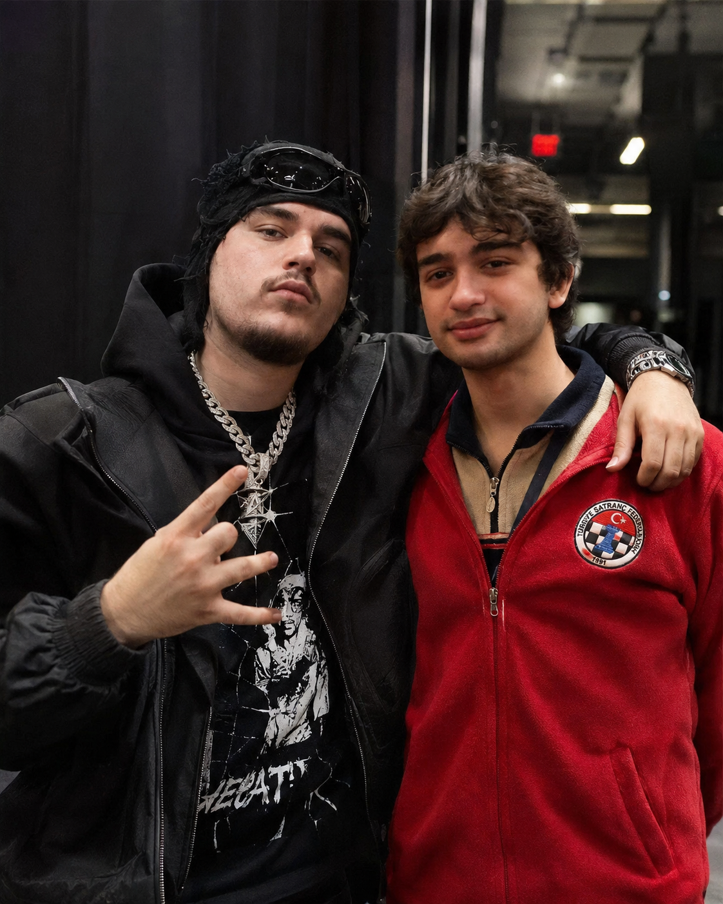
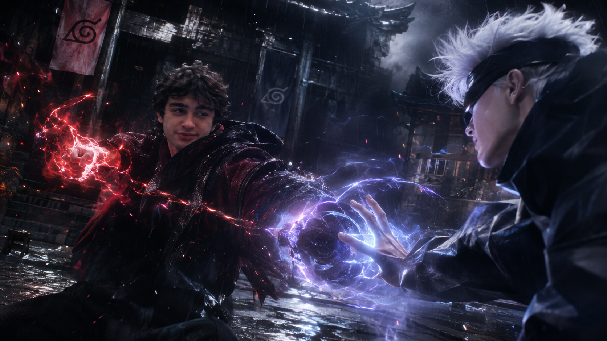

01
UP 2 MË / 2021MONËY
SO BIG
FULL-SCALE SIGNAL
LOW END OVERLOAD
ANTALYA / 36.89°N 30.70°E
02 NOV 2004
SUBJECT DETECTED
AURA NOT FOUND
YEAT
TRANSMISSIONS
FULL-SCALE SIGNAL
LOW END OVERLOAD
LEFT CHANNEL BENT
PATH CLEARED
VOICE INPUT HOT
REPLY DENIED
“HOLD YOUR BREATH
’TIL YOU PASS OUT”
SUBJECT
INDEX
ONLY VERIFIED DATA
Everything after this line is disputed, exaggerated or straight-up szr lore.
UNAUTHORIZED
CHANNELS

PRIME YEAT TRANSMISSION
TONKA CHANNEL OPEN // STILL BUFFERING
LIMITLESS REQUEST
FRIEND REQUEST: PENDING SINCE 2004

03:17 / AFTERIMAGE
NANA ON SCREEN // OSNS

UNFORTUNATE
FOOTAGE

